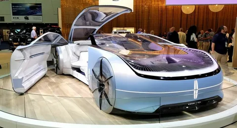

История автомобилей
Автомобиль - это одна из самых значительных отраслей экономики, которая оказала огромное влияние на развитие технологий, экономики и общественного уклада. Её история насчитывает более века, за который отрасль прошла множество трансформаций. Рассмотрим ключевые этапы её эволюции.
1. Начало: изобретение автомобиля (1880-е – 1900-е)
История автомобилей берет начало в конце XIX века с изобретения первых бензиновых двигателей. Одной из ключевых вех стало изобретение Карла Бенца, который в 1886 году представил Benz Patent-Motorwagen — первый автомобиль с двигателем внутреннего сгорания. В это же время активно работали и другие изобретатели, такие как Готтлиб Даймлер и Вильгельм Майбах, которые внесли значительный вклад в создание первых транспортных средств. Эти инновации стали фундаментом для будущего автомобильной промышленности.
2. Массовое производство: доступность для всех (1900-е – 1920-е)
Начало XX века ознаменовалось революцией в производстве автомобилей. В 1908 году Генри Форд внедрил конвейерную систему сборки, что позволило резко сократить затраты на производство и сделать автомобили доступными для широких слоёв населения. Модель T, ставшая культовой, продемонстрировала возможности массового производства. Этот период также стал временем основания крупных автомобильных компаний, таких как General Motors и Chrysler.

3. Влияние Второй мировой войны (1930-е – 1940-е)
В годы Второй мировой войны автопроизводители сосредоточились на военных нуждах, производя танки, грузовики и другую военную технику. После окончания войны началось восстановление гражданского производства, и уже в 1950-е годы автомобиль стал не только средством передвижения, но и символом статуса и личной свободы. Это время стало началом массовой автомобилизации в развитых странах.
4. Эпоха инноваций (1960-е – 1980-е)
В 1960-х годах начался стремительный рост технологических разработок в автомобильной промышленности. Были внедрены такие важные новшества, как электростартеры, ремни безопасности, подушки безопасности и антиблокировочная система тормозов (ABS). Автопроизводители стали уделять больше внимания вопросам экономичности, надежности и экологической безопасности. В этот период на мировой рынок активно вышли японские компании, такие как Toyota, Honda и Nissan, которые стали серьёзными конкурентами для американских производителей.

5. Глобализация автомобильного рынка (1990-е – 2000-е)
Конец XX века стал эпохой глобализации. Крупные автопроизводители начали открывать заводы по всему миру, снижая производственные издержки и адаптируясь к особенностям локальных рынков. Китай, Индия и другие страны стали важными потребителями и производителями автомобилей. В это же время популярность приобрели новые типы транспортных средств, такие как кроссоверы и SUV.
6. Эра электромобилей и автоматизации (2010-е – настоящее время)
Cовременная автомобильная промышленность находится в стадии перехода к экологически чистым технологиям. Электромобили, такие как модели Tesla, BMW, Nissan Leaf и другие, становятся все более популярными благодаря экологическим стандартам и стремлению к устойчивому развитию. Кроме того, современные технологии, такие как системы автономного вождения, интеграция с мобильными устройствами и искусственный интеллект, кардинально меняют представление о будущем автомобилей.
Заключение
История автомобильной промышленности — это история постоянных инноваций и адаптации к изменениям в обществе. Сегодня она находится на пороге новой эры, где ключевыми становятся экологичность, автоматизация и глобализация.